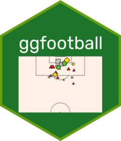

Changelog
Source:NEWS.md
ggfootball 0.2.0
CRAN release: 2025-01-31
BREAKING: Changed the name of the
background_colorargument ofxg_chart()tobg_color.BREAKING: Changed the default value of the
competitionargument ofxg_chart()from “Premier League” to empty.Added a new argument
plot_bg_colorforxg_chart()to allow the color modification of the whole plot background.Changed the documentation accordingly.
ggfootball 0.0.0.9000
- First commit.
- Added function for plotting xG/shots map using ‘Understat’ data
xg_map(). - Added function for plotting xG charts using ‘Understat’ data
xg_chart().